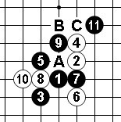
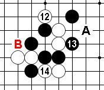
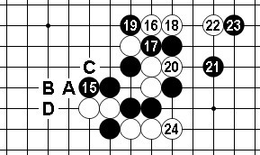
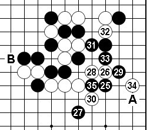
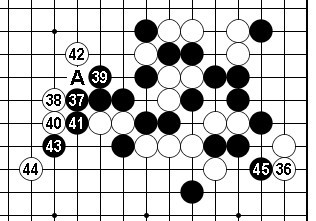
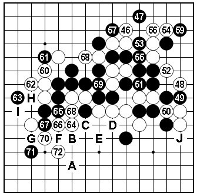

第11届世锦赛对局点评（AT 第1轮）
#1 第11届世锦赛对局点评（AT 第1轮） 作者：有志青年 发表时间：2009-8-8 6:22:14
多年来一直很期待中村茂在世锦赛上的重新登场，今日早早守候在电脑旁观看首轮对局的直播。第一轮中村茂的对手是本国年轻棋手冈部宽，二人在国内有过多次交手，中村茂大比分领先。冈部宽之前参加了QT预选赛中发挥不太理想，最后一轮勉强晋级。相比中村茂以逸待劳，综合比较所以这盘看好中村还是情理之中的。
黑方 冈部宽 白方 中村茂 布局 斜月

实战谱1（1~11）斜月三打的这个5较难下，至黑9与之前QT卡尔松VS曹冬一局相同。卡尔松的11选择A位活三，结果黑棋早早丢失先手。相信冈部宽对那盘棋应该是了解的，黑11变招的效果如何？观战时感觉12大致有B、C两个选择，接下来的实战进程……

实战谱2（13~14）中村茂选择的12更富于变化，黑13当然的一手。观战时在兰州五子棋群与棋友探讨，我当时的意见是14不会下在通常的A点，应该会选择实战的14。选择14-A的话，那样黑将转移到下方。实战的14积极的一手，有将黑棋限制在右边的意图。接下来15-B应该要防一手的。

实战谱3（15~24）16是此即盘面的急所。黑17如脱先亦无趣，所以观战时感想黑还是要防一手的。以下19~20正常应接，21意图兼顾防守的同时留下向下方回旋的伏笔。22时机绝好，23必须要防一手，24是与14、22相关联的下法，同时让21的计划破产。环顾全局白已成功将黑棋局限在狭小范围内，如此白棋有望黑不乐观。另外需要注意的是，21如于左边出动，21-A，22-B，23-C，24-D后黑也不行，如此左右白都有余味。

实战谱4（25~35）与24针锋相对的是25、27的下法，这里不能再于局部行棋，只能尽量消减白棋厚势。中村的26、28坚实。29是可以推敲的一手，可能是冈部宽受时限压力29以下交换较草率，至黑35还丢失先手无疑是雪上加霜。观战到此接下来全局有A、B两处显而易见的好点，中村的选择？

实战谱5（36~45）实战36构想宏大，尤其是对实战对手心理的把握精准。37~44应该是冈部宽在时限下的不得已走法，这也是中村可以预见到的交换。大家要特别注意42这步棋的位置，普通42多数应该走A位那样子力较本图42更强些。为何中村于常见的A点避而不下呢？冈部宽的45手之后答案揭晓。

实战谱6（46~72）46后讲解是多余的，因为以下白棋追胜是展现中村茂超强计算力的时刻。注意到实战谱5的42位置是多么重要了吧？最后白64也可以捉黑棋四四禁手，不过对于棋手来说在有限的时间下，算清并保证一种胜法就足够了。72后冈部宽投子（73如A，白74以下按B~I顺序VCF胜）。冈部宽的45如果选择J位防应该是最强，那么白如何胜？
#2 Re:第11届世锦赛对局点评（AT 第1轮） 作者：起航 发表时间：2009-8-9 2:38:26
呵呵，讲得太好了。#3 Re:第11届世锦赛对局点评（AT 第1轮） 作者：nara 发表时间：2009-8-9 13:38:38
李老师的棋枰写的很好！来学习了！#4 Re:第11届世锦赛对局点评（AT 第1轮） 作者：蠢虫 发表时间：2009-8-13 13:59:05
对悟李老师的对局讲解